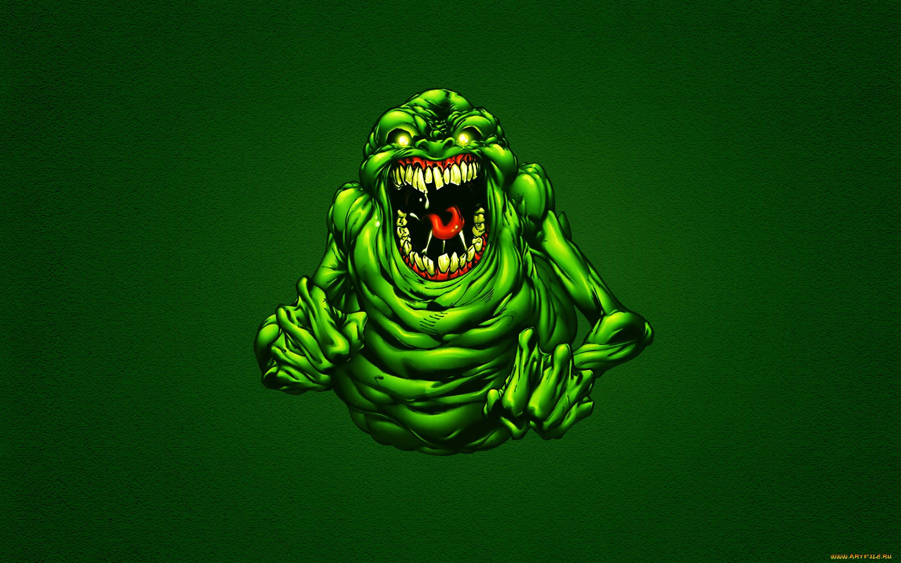
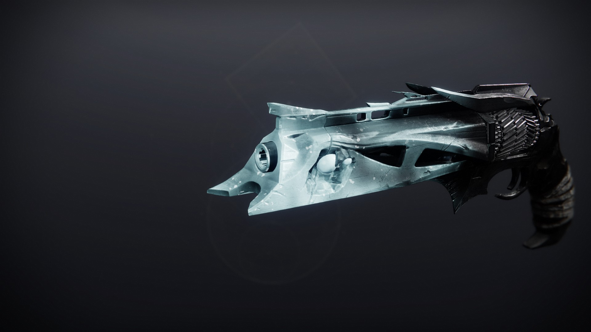

Explore o mundo sombrio de fantasmas e mistérios. Prepare-se para enfrentar o desconhecido!
Em uma cidade esquecida pelo tempo, estranhos fenômenos começaram a ocorrer.
Você é Pandorino, um caçador de fantasmas que retorna ao local onde tudo começou.
Armado apenas com sua pistola espiritual, você enfrentará espíritos vingativos e monstros bizarros.
O quanto mais espera, mais percebe um aumento no número de fantasmas... Você deve ser rápido.
Mova com os direcionais.
Atire com o botão esquerdo do mouse.
Space para reiniciar o jogo.

